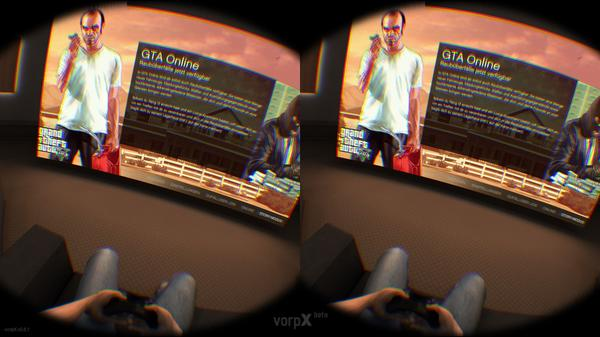

Merk disse tre betydningene:
Teknologiske følgere, teknologisk fremgang og teknologisk utvikling
Hva er teknologiske følgere, fremgang og utvikling?
Det handler om dagens, morgendagens og fremtidens teknologier. Det er der vi er i dag og hvor vi skal være i morgen. Det er ingen grenser for hvor teknologien vi ser i dag vil komme til en slutt. Slutten på nybegynnelsen. Vi vil se teknologien gå videre til det neste målet etter det andre. Hva vil følge? Hva vil følge teknologiene vi vet om i dag? Fremdriften og utviklingen av teknologi vi ser i dag begynner i begynnelsen og blir til slutt den mest avanserte teknologien, den når toppen. Betydelig avansert teknologi, uante muligheter, økte fordeler, det betyr at verden vi ser i dag er på et stadium av fremgang og utvikling til nye høyder.
Hva blir den neste utviklingen innen dagens teknologier?
Hva vil følge etter dagens teknologi?
Som du kan lese, har jeg skrevet disse to spørsmålene ovenfor. Jeg spør om dem fordi jeg er nysgjerrig, jeg er spent, jeg vil vite hvordan det går og jeg er interessert i å prøve ny teknologi, eller bare lese om det, lese at de eksisterer og at vi har en fordel ved dem.
Vi må stille spørsmål for å få svar, svar på problemene våre eller svar for å forutsi. Vi kan bare spekulere i hva som vil skje innenfor prosessene med nye teknologier, som vi bruker per dags dato og hva vil de skape for oss. Hvordan vil de forbedre samfunnet vårt, og hvordan vil folket som bruker dem reagere?
La oss spekulere i hva som skjer med noen av teknologiene vi allerede har, og hva jeg tror vi vil se til slutt eller i hvertfall på slutten av en periode med høyteknologisk innovasjon. Eller rett og slett en fremtidig periode i menneskets tidsalder.
Hva vil vi se av fra disse tre typene teknologier:
- Virtual Reality (VR)
- Spill - GTA(Grand Theft Auto) den virtuelle verdenen til GTA
- Den virtuelle verdenen til Internett og utover
Virtuell virkelighet er en spennende teknologi. Det handler om å se verden gjennom et optisk felt av animerte omgivelser eller virkelige omgivelser av kameraer satt opp et annet sted eller kunstig virkelighet. Det handler om spill. Det handler om å ha det bra og oppleve noe fantastisk. Hva kan vi se når Virtual Reality har tatt det store skrittet til å bli en avansert tech og er i en tid hvor fremgangen har kommet så langt at det ikke har noen grenser? La oss spekulere i et par områder og øyeblikk av VR/AR.

Framtid
Det første området er online spill, og øyeblikket handler om spillet GTA (Grand theft auto) hvor vi vil koble online spillopplevelsen til GTA med VR. Ikke vanlig VR slik vi ser i dag. Det er en type høyteknologisk VR, en type VR som du kobler direkte til hjernen din, via noen elektromagnetiske nevrovitenskapelige kretskort, som igjen er koblet til et høyteknolgisk Internett. Så er du plutselig i en verden av GTA. Det er nesten som om du er der, du føler, ser og berører GTA-verdenen. For å komme deg ut, har du en talekode eller knapper på en kul gadget på armen. Det er på tide å spille.
Det andre området er internett og øyeblikket er mye informasjon. All informasjonen du noensinne trenger. Informasjon om alt. Du er i ferd med å ta en tur via VR som er koblet til hjernen din via internettets verden. Internett er nå et sted for informasjon og samlinger(slik som i dag foran en skjerm). Det er informasjon for deg som vil lære og samlinger for folk som vil møte.
Når vi ser en økning av det vi har gjort av fremgang og utvikling, kan vi oppleve et stort hopp fra de vanlige metodene vi bruker for å finne informasjon til mye mer avanserte teknologiske metoder for å få informasjonen rett foran oss. Ikke bare informasjonen, også den sosiale delen der vi nesten kunne berøre hverandre “på” internett.
- Google assistant, Cortana og Siri
Stemmene i vår tid. Stemmene utviklet av våre teknologier. Teknologier laget av oss. Vi har sett starten på disse stemmene som våre digitale assistenter i våre mobile enheter. Du har kanskje allerede hørt, lært eller brukt dem. Googles: Google assistant, Microsofts: Cortana og Apples: Siri. Disse tre digitale stemmeassistentene er begynnelsen på noe veldig nyttig for oss og omgivelsene våre. Foreløpig er stemmeassistenter i dag ikke så fullt utviklet til alle våre behov. De er nyttige på mange måter, men ikke på alle måter.
Framtid
La oss puste inn og puste ut til vår digitale stemmeassistent på et høyere nivå i fremtiden. Hvor går utviklingen? Hva kan vi forvente? Vi bør forvente mye på bakgrunnen av hvor utviklingen er på vei. Forvent en dag med digitale stemmer foran oss. Forvent stemmer som kan hjelpe oss i alle slags situasjoner. Må vi alltid snakke med disse stemmene for å få noe til gjengjeld? Nei, ved hjelp av sensorer (som deres digitale øye) og Big data(store data) (som deres sinn), bør vi forvente ikke av oss, men av dem. Dem for å hjelpe oss hele tiden døgnet rundt.
- Augmented Reality (AR)
Denne typen tech er veldig interessant. Det er AR eller Augmented reality. Jeg vil sammenligne og si at den er i samme kategori som VR. Det er Star Wars tech slik at når du for eksemple får et holografisk bilde foran deg. Bruksområdene til denne teknologien er store. Mange oppstarts-bedrifter bør kunne utnytte denne teknologien når de er fullt funksjonelle og utvikler seg til noe meget avansert. Noen av de første funksjonene jeg kan forestille meg, kan være på våre mobile enheter. Skjermen vises i luften. En funksjon som er åpenbart for mange.
Framtid
La oss tenke annerledes, la oss tenke i reklame. Annonsering er noen ganger(eller alltid) irriterende, men når reklame blir involvert i augmented reality(AR) blir det plutselig interessant.
Det blir sikkert interessant for forbrukeren å bare se på den reklamebaserte AR annonsen, det er ikke like plagsomt som en tv-annonse eller annonse limt fast i skjermen. Til å begynne med vil det være ganske nytt og spennede. Men husk når denne avanserte AR-annonseringen tar over for fullt vil denne type reklame bli like vanlig som en tv-reklame vi ser på i dag.
Men hva om forbrukeren får bruke AR til seg selv. Hva kan vi forvente å se når det skjer? Kanskje som julepynt inne i / utenfor huset ?, en ny metode for kommunikasjon (åpenbart), en ny måte for å få informasjonen fra internett, som et brukergrensesnitt på.
Et grensesnitt ikke bare sett, men også berørt.
Jeg viser til en artikkel på Wikipedia: http://en.wikipedia.org/wiki/Augmented_reality, her er det skrevet en del om forskjellige områder på hvor vi kan bruke AR.